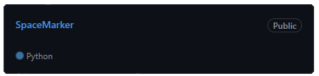

Olá! Sou o Alan, tenho 20 anos e sou academico de Ciências da Computação. Gosto de desáfios e de resolver problemas, no momento estou em busca de uma oportunidade onde possa demonstrar isso e expandir meus conhecimentos no campo da tecnologia. Tenho experiência no desenvolvimento de projetos internos academicos utilizando Python e estou aprofundando meus conhecimentos em HTML, CSS, JavaScript e Java.
Graduação: Ciências da Computação
Instituição: Atitus Educação
Período: 2023/1 - Presente
Nível: Terceiro Semestre
Localização: Passo Fundo, RS.
Empresa: Semeato Idustria e Comercio
Função: Auxiliar Contábil
Período: Março/2023 - Atualmente
Projeto que consiste na croptografia, assinatura, validação e envio de arquivos via soquet cliente/servidor local.
Projeto elaborado para a conclusão do primeiro semestre.